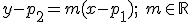
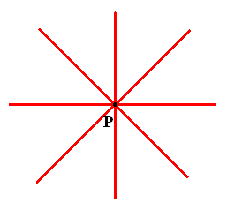
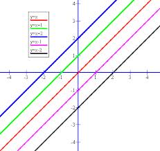

Geometría analítica
Haz de rectas
El haz de rectas secantes, es el conjunto de infinitas rectas que pasan por el punto P(p1,p2):


Ejemplo: y – 3 = m (x – 2), m Є R, es el haz de rectas que pasan por el punto (2,3)
El haz de rectas paralelas, es el conjunto de infinitas rectas paralelas a r : Ax + By + C = 0

Ejemplo: 3x + 2y + k = 0, k Є R, es el haz de rectas paralelas a 3x + 2y – 15 = 0
Ejercicios
1.- Encuentra la ecuación de la recta que pasa por la intersección de las rectas r: 3x + y - 1 = 0 y s: x - y + 5 = 0 ,y es paralela a x + y = 0.
2.- Encuentra la ecuación de la recta que pasa por los puntos (3,3) y (-1,-1), usando el haz de rectas secantes de uno de los puntos.
Soluciones: a) x + y -3 = 0; b) y - 3 = 1·(x - 3)
Obra publicada con Licencia Creative Commons Reconocimiento No comercial Compartir igual 4.0